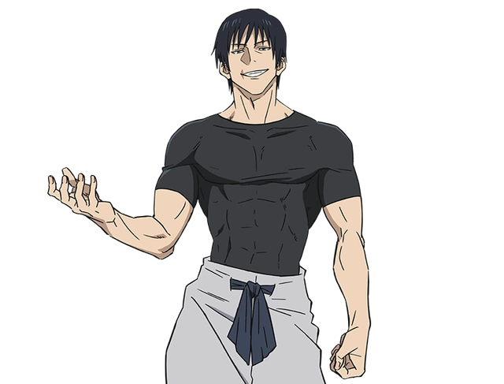

Bienvenidx a esta humilde página adoradora del gran Toji Fushiguro
Disfruta de las mejores imágenes, noticias y obsesiones relacionadas con este pedazo de hombre.
Dime que no te dan ganas de adorar a tremendo DIOS
Toji Fushiguro (伏黒甚爾 Fushiguro Tōji), nacido como Toji Zenin (禪院甚爾 Zen'in Tōji), es un personaje secundario recurrente de Jujutsu Kaisen. Fue miembro del Clan Zenin y el padre de Megumi Fushiguro y Tsumiki Fushiguro.
Enlace externo de fandom oficial
Si quieres saber más sobre Toji en un sitio oficial creado por fans y mejor estructurado, no dudes en visitar Wiki Toji Fushiguro.